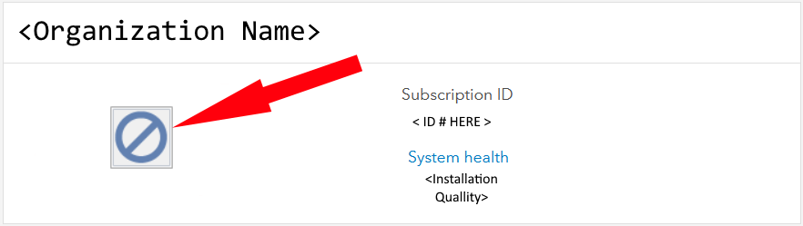
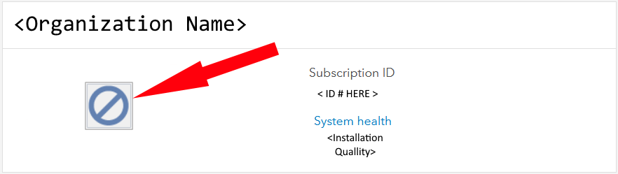

What is GIS?
Geographic Information Systems, or GIS for short, are data structures
that analyze and display geographicly referenced information. They use data
attatched to unique locations to display relationships between spaces. GIS has many aplications,
especially in earth sciences and biology. Popular programs like Esri's ArcMap/ArcGIS Pro are programs that do not
require coding experience and help bridge the gap between earth sciences and computer science.
Source: USGS.gov
What are its uses?
GIS technology is often used to conduct scientific investigations,
manage resources, as well as aid in development planning. According to
National Geographic;
many retail businesses will use GIS software to help them determine where to locate a
new store. Marketing companies will use GIS to decide to whom to market stores and resturaunts
, as well as where that marketing should be.

Where do I start ? || Installation.
GIS can be daunting to apply without resources. You will need mapping software (The same way you would use an IDE)
and, you will need a source for Geographic data. Both of which are highly inaccesable to the public.
Luckily for you, any institution that works with GIS, also has those resources available.
The most popular and uptodate option by far is
Esri's ArcGIS Pro.
Once Authorized so you will be able to download ArcGIS Pro from
This Link.
Once you've nativated to an authentic login that has an uptodate Esri license will be required.
When your finished logging in you make sure you are navigated to the Organization tab of the website

You should see icons for whatever Esri Software you (or your organization) has purchased.
 If you do not have access to any software you will instead see this icon.

If you do not have access to any software you will instead see this icon.

Before installing Esri products you
Must install required microsft frameworks (These patches are not currently available for Mac)
(Raw_URL)
https://dotnet.microsoft.com/en-us/download/dotnet/thank-you/runtime-desktop-6.0.6-windows-x64-installer